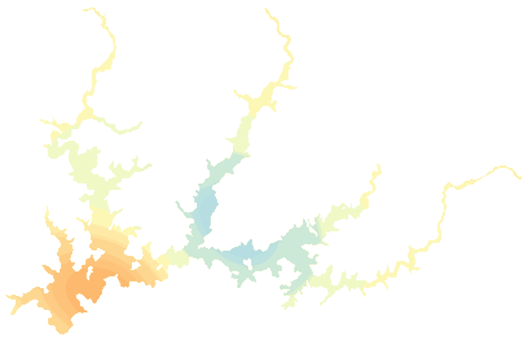

LakeScope › CA
Shasta Lake today
Updated 2026-11-21 - Atlas Labs
Clear water, 55°F water, level rising, 19 ft below normal, calm this morning.
Water level
972.60 ft
California Dept. of Water Resources - 2026-11-20
7-day trend: rising (+1.65 ft). Compared with normal for this date: -18.5 ft (same weeks, 2016-2025).
Water clarity and algae
Clear water Last clear view: about a week ago. 3 cloudy passes since.
Surface temperature
55°F
seen from space on 2026-11-17

Ice
Open - 0% ice cover
Estimate from weather and satellite, not a measurement. Check the ice yourself before going on it.
Weather, next 3 days
| Day | Sky | High / low | Wind | Rain |
|---|---|---|---|---|
| Saturday | Light Rain | 45 / 42°F | 3 mph SE | 98% |
| Sunday | Chance Light Rain | 46 / 42°F | 2 mph N | 41% |
| Monday | Chance Light Rain | 48 / 44°F | 2 mph E | 31% |
Sunrise 07:03 - sunset 16:46 - Waxing gibbous. National Weather Service.
Get the LakeScope app: alerts and the 3-D view of Shasta Lake